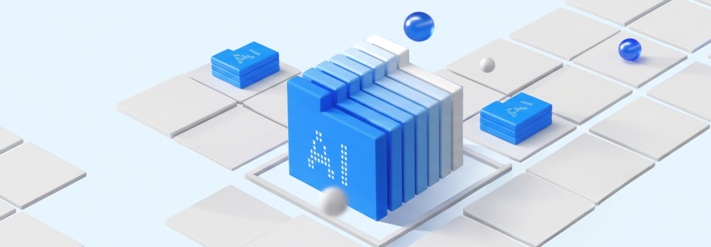

Overview
제조 혁신은 단순 자동화를 넘어 AI·머신러닝 기반 분석으로 불량 예측과 생산 최적화를 실현하는 것입니다. 웅진은 Power Platform·SAP Analytics Cloud를 활용해 업무 자동화에서 지능형 분석까지 이어지는 기반을 제공합니다.
인공지능과 머신러닝을 통한 제조 공정 혁신
인공지능과 머신러닝은 제조 산업에서 자동화와 최적화를 실현하며, 기업의 경쟁력을 크게 향상시킵니다. 이 기술들은 생산 과정에서 발생하는 데이터를 실시간으로 수집하고 분석하여, 생산성을 극대화하고 불량률을 줄이며, 생산 중단 시간을 최소화합니다. 이러한 기술 도입은 재료비, 인건비, 운영비 등 다양한 원가 요소를 실시간으로 예측하고 관리할 수 있게 하여, 비용 절감과 수익성 강화를 가능하게 합니다. 더 나아가, AI와 ML은 시장 동향에 신속하게 대응할 수 있는 능력을 제공하여, 기업이 변화하는 시장 환경에서 지속적으로 성장할 수 있는 기반을 마련합니다.
시장 변화에 유연하게 대응하는 경쟁력 강화
AI와 ML의 도입은 제조업체가 시장 변화에 신속하게 대응할 수 있도록 도와줍니다. 실시간 데이터 분석을 통해 기업은 시장의 변화에 따른 생산 계획을 즉각적으로 조정할 수 있으며, 이를 통해 경쟁력을 유지하고 강화할 수 있습니다. 이 기술들은 생산 공정의 효율성을 높이고 품질을 향상시켜, 기업이 지속 가능한 성장을 이루는 데 중요한 역할을 합니다. 결과적으로, 인공지능과 머신러닝은 제조업체가 변화하는 시장 환경에서 유연하게 대응하고 장기적인 성공을 도모할 수 있는 필수적인 도구입니다.

Features
실시간 데이터 수집 및 분석
웅진은 제조업 IT솔루션의 컨설팅 경험을 바탕으로 고객사의 필요에 따라 MES(Manufacturing Execution System)와 AI, ML 기술을 결합하여, 생산 과정에서 발생하는 대량의 데이터를 실시간으로 수집하고 분석합니다. 이를 통해 머신러닝 알고리즘이 현장의 생산 라인 운영을 최적화하고, 계획을 자동으로 조정하여 불필요한 과정을 줄임으로써 생산성을 극대화할 수 있습니다. 실시간 의사결정을 지원하여 품질 문제에 즉각적으로 대응할 수 있습니다.
예측 기반의 생산 공정 최적화
예측 기반의 생산 공정 최적화는 AI와 ML을 활용하여 생산 데이터를 분석하고, 이를 통해 공정을 실시간으로 최적화하는 기술입니다. IoT 센서를 통해 수집된 데이터를 분석하여 공정에서 발생할 수 있는 문제를 사전에 예측하고 대응할 수 있습니다. AI 기반의 자동 제어 시스템은 실시간 데이터를 바탕으로 생산 공정을 조정하여, 항상 최적의 상태를 유지할 수 있도록 돕습니다.
원가 및 손익의 실시간 예측
원가와 손익을 실시간으로 예측하고 관리할 수 있는 강력한 도구를 제공합니다. ERP 시스템은 생산, 재고, 판매, 구매 등 다양한 소스에서 데이터를 실시간으로 수집하여 통합하고, 클라우드 기반의 솔루션을 통해 더욱 강력한 예측 기능을 제공합니다. 머신러닝 모델은 과거 데이터를 분석하여 미래의 비용을 예측하고, 비용 초과나 절감을 실시간으로 감지하여, 업무의 효율을 극대화할 수 있습니다. 이를 통해 제조 공정의 모든 비용 요소를 실시간으로 분석하고, 최적화할 수 있습니다.